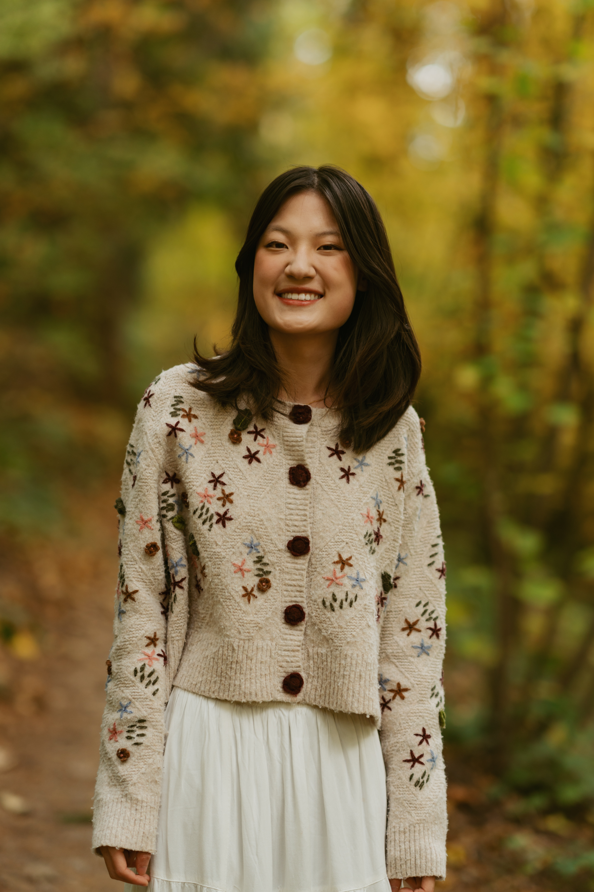

Dana Kim is a sophomore Broadcast and Digital Journalism student at the S.I. Newhouse School of Public Communications with a dual major in Public Health at the Maxwell School of Public Service at Syracuse University. While she aims to become a multimedia journalist, her biggest passions lie in radio journalism, where she loves catching a great sound or interview for an audio story. She seeks to spotlight issues that usually get overlooked – whether it’s a political race with less attention or work covering inequities in chronic and environmental health. However, she also loves many beats, whether it’s culture or hard news, and is willing to go wherever a story leads her. Her passions in journalism began in her hometown of Portland, Oregon, where she quickly fell in love after working on her school’s yearbook sophomore year of high school. Since then, she’s been published in a variety of outlets, including The Oregonian, The Daily Orange, and The Asian Reporter. Currently, she is working as a Content Producer for WAER 88.3 news, Syracuse University’s premiere NPR affiliate station. At the station, she’s worn a variety of hats, whether it is a reporter,web editor, or social media producer creating reels for her stories.
My three favorite things about Syracuse:
